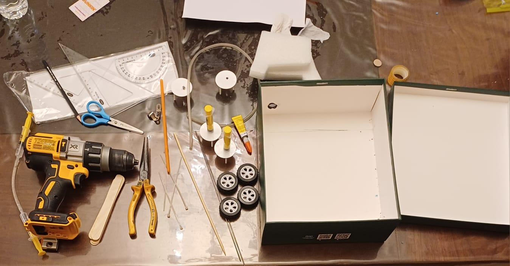

| assignment | task | your input | Due date |
|---|---|---|---|
| Assignment 1 | Research Question | How does changing the amount of force applied to a hydraulic trolley affect how much weight it can lift? | 1st of Feb |
| Assignment 1 | STEM Connection | STEM connection : Science: Uses fair or liquid pressure and how liquids behave when force is applied Technology: Hydraulic systems like car jacks, brakes, and construction machines Engineering: Designing and building a working hydraulic trolley that can lift objects Math: Measuring force, weight lifted, and comparing results using data tables or graphs | 1st of Feb |
| Assignment 2 | Hypothesis | If more pressure is applied to the hydraulic trolley, then the trolley will move further. | 8th of Feb |
| Assignment 2 | List of materials | Drill
Shoe box
Straws
Pizza holders
Syringe
Metal rods
Zip ties
Iv tubes
Wooden skewers
Cardboard
Foam
 |
8th of Feb |
| Assignment 3 | Write the Procedure | the procedures for the Hydraulic trolley machine: Step 1: measure the box Step 2: put 2 metal rods through the box 4 cm away from the side and 1cm up from the floor on 2 parallel sides Step 3: super glue wheels one each end of the metal rods Step 4: full 2 syringes with water Step 5: connect 2 pairs of syringes together using iv tubes (it can not be the 2 syringes filled with water) step6: super glue 1 of the syringes from each pair in the box and keep the other one from the pair outside the box using a hole in the box Step 7: super glue a cardboard sheet on top of the 2 syringes in the box Step 8: super glue the lid of the box on the cardboard sheet Step 9: press the 2 syringes outside the box together to lift the lid of the box | 15th of Feb |